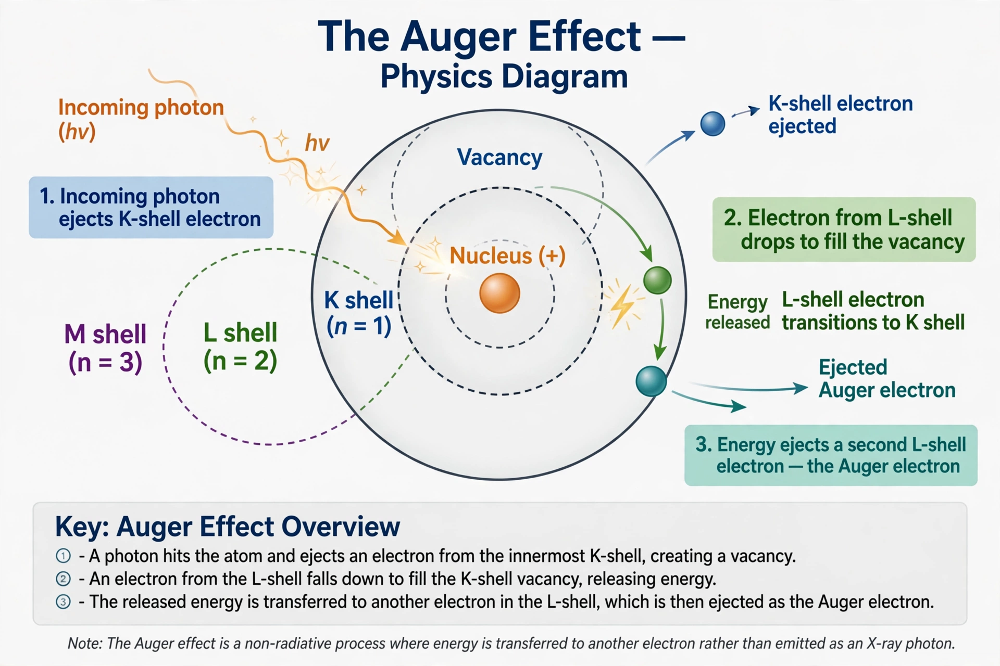

| Type | Atomic physical phenomenon |
|---|---|
| Discovered | 1922 (Lise Meitner); 1923–1925 (Pierre Victor Auger) |
| Result | Emission of an "Auger electron"; atom left doubly ionised |
The Auger effect is a physical phenomenon in which the filling of an inner-shell vacancy of an atom is accompanied by the emission of an electron from the same atom. When a core electron is removed, leaving a vacancy, an electron from a higher energy level may fall into the vacancy, resulting in the release of energy. Instead of being emitted as an X-ray photon, this energy can be transferred to another electron, which is ejected from the atom; this second ejected electron is called an Auger electron.
The effect was first described by Lise Meitner in 1922, and independently observed and analysed by the French physicist Pierre Victor Auger in 1923–1925 while studying electron tracks in a cloud chamber; the phenomenon bears Auger's name. Auger noticed short electron tracks whose energies were independent of the exciting radiation and characteristic of the irradiated element.
Transitions are labelled by the shells involved: in a KLL transition, a vacancy in the K shell is filled by an electron from the L shell, and the released energy ejects another L-shell electron. The kinetic energy of the Auger electron is approximately the difference between the binding energies of the shells involved, making it a fingerprint of the emitting element. The Auger effect competes with X-ray fluorescence; it dominates for light elements, whereas heavier elements more often relax by emitting X-rays.
Auger electron spectroscopy (AES) exploits the effect as a surface-sensitive analytical technique: because Auger electrons escape from only the top few atomic layers, AES is used to determine the elemental composition of surfaces, thin films and interfaces in materials science and semiconductor technology.